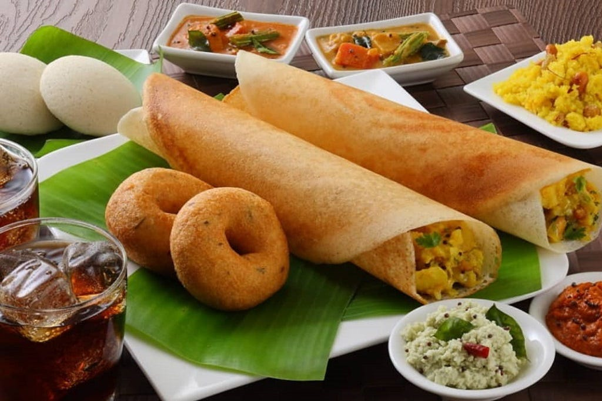
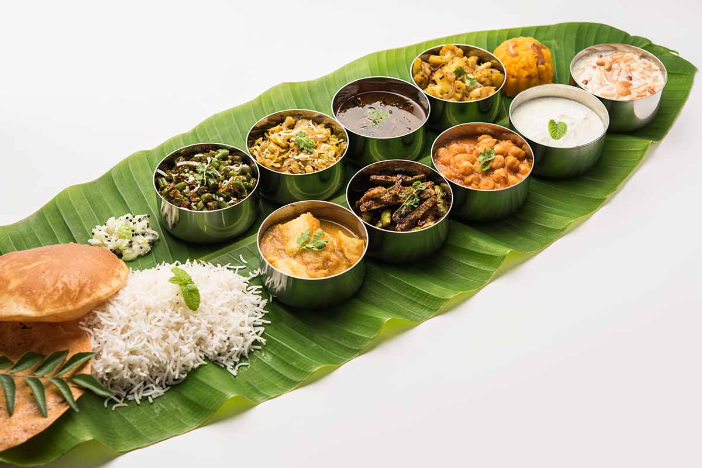
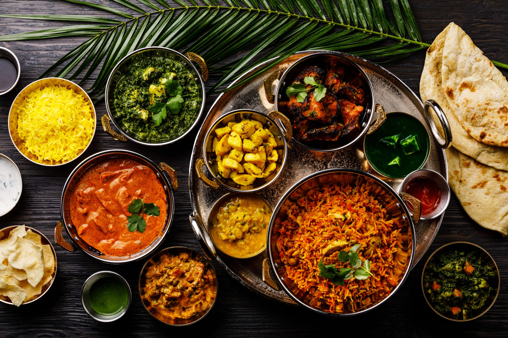

Authentic Breakfast
Crisp dosas, fluffy idlis, golden vadas — every dish crafted with care and served with freshly ground chutneys and aromatic sambar.
Desilicious Cafe was born from a passion to bring authentic South Indian vegetarian food to the heart of Austin. We blend time-honored recipes with a touch of modern presentation, creating meals that are comforting, wholesome, and unforgettable.

Crisp dosas, fluffy idlis, golden vadas — every dish crafted with care and served with freshly ground chutneys and aromatic sambar.

Our traditional thalis bring together the perfect balance of flavors, nutrition, and heritage — a complete Indian dining experience.

From family gatherings to grand celebrations, we’re proud to serve Austin with love, authenticity, and a smile.